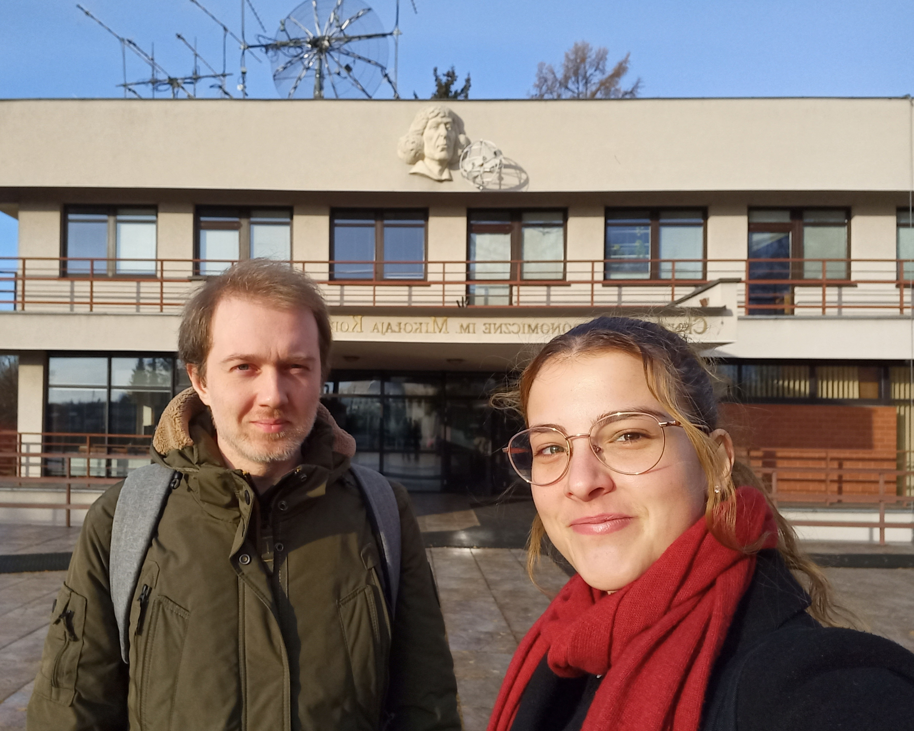

Conferences, Meetings and Workshops
1st MERLIN meeting
Participants: Prof. Brynmor Haskell (PI), Prof. Sebastiano Bernuzzi (Co-PI), Dr. Raj Kishor Joshi, Dr. William G. Cook, Aurora Capobianco
The meeting is held at CAMK, Warsaw (PL), and the agenda includes the following:
- Updates of the current state of our isolated neutron stars simulations;
- Discussions regarding future developments of our astrophysical models;
- Writeup and submission of proposals for computing time at various European HPC facilities.

A.C. and W.C. at the Nicolaus Copernicus Astronomical Center
RTG Physik-Combo event
Attending the transregional training initiative of the RTG 2522 Jena Leipzig that provides in-depth research training in topical areas in the context of "Strong Dynamics and Criticality in Quantum and Gravitational Systems".
MPhys Placements and Projects Conference 2024 at the University of Bath
Presented my Master's thesis on "Supernova-induced processing of cosmic dust".